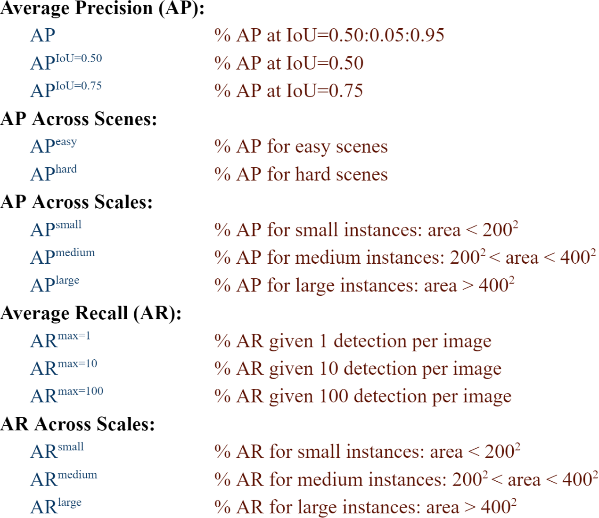

Instance Detection (InsDet) is a practically important task in robotics applications, e.g., elderly-assistant robots need to fetch specific items from a cluttered kitchen, micro-fulfillment robots for the retail need to pick items from mixed boxes or shelves. Different from Object Detection (ObjDet) detecting all objects belonging to some predefined classes, InsDet aims to detect specific object instances defined by some examples capturing the instance from multiple views.
This year, we plan to run a competition on our InsDet dataset, which is the instance detection benchmark dataset which is larger in scale and more challenging than existing InsDet datasets. The major strengths of our InsDet dataset over prior InsDet datasets include (1) both high-resolution profile images of object instances and high-resolution testing images from more realistic indoor scenes, simulating real-world indoor robots locating and recognizing object instances from a cluttered indoor scene in a distance (2) a realistic unified InsDet protocol to foster the InsDet research.
Participants in this challenge will be tasked with predicting the bounding boxes for each given instance from testing images. This exciting opportunity allows researchers, students, and data scientists to apply their expertise in computer vision and machine learning to address instance detection problem. We refer participants to the user guide for details.
The InsDet dataset contains 100 object instances with multi-view profile images, 200 pure background images and 160 scene images. Participants can download the dataset from the InsDet dataset.
Following the COCO dataset[8], we tag testing object instances as small, medium, and large according to their bounding box area. The following 12 metrics are used for characterizing the performance of an instance detector on InsDet dataset. Additionally, we will also evaluate AP on easy and hard scenes separately.
The generated JSON or CSV file should adhere to the following dictionary format:
[{"image_id": 0,
"category_id": 79,
"bbox": [976, 632, 64, 80],
"score": 99.32915569311469,
"image_width": 8192,
"image_height": 6144,
"scale": 1,
"image_name":
"easy.leisure_zone.rgb_000.jpg"},
...
{"image_id": 159,
"category_id": 9,
"bbox": [921, 803, 28, 106],
"score": 99.32927090665571,
"image_width": 8192,
"image_height": 6144,
"scale": 1,
"image_name": "hard.pantry_room_001.rgb_019.jpg"}]
If you find our work useful, please consider citing our papers:
@inproceedings{shen2025solving,
title={Solving Instance Detection from an Open-World Perspective},
author={Shen, Qianqian and Zhao, Yunhan and Kwon, Nahyun and Kim, Jeeeun and Li, Yanan and Kong, Shu},
booktitle={Proceedings of the IEEE/CVF Conference on Computer Vision and Pattern Recognition (CVPR)},
year={2025}
}@inproceedings{shen2023high,
title={A high-resolution dataset for instance detection with multi-view object capture},
author={Shen, Qianqian and Zhao, Yunhan and Kwon, Nahyun and Kim, Jeeeun and Li, Yanan and Kong, Shu},
booktitle={Conference on Neural Information Processing Systems (NeurIPS) Datasets & Benchmark Track},
year={2023}
}